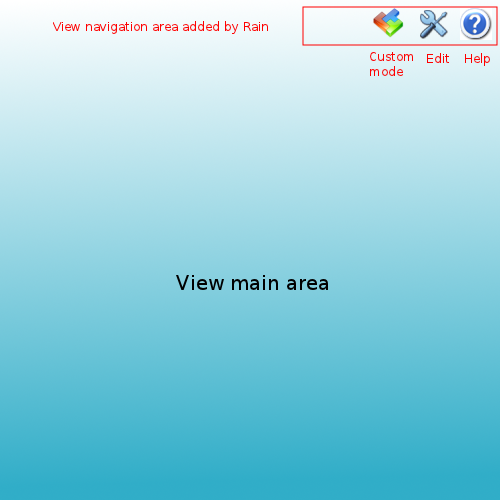

View modes¶
RAIN must provide multiple modes of the same view.
This allows platform to provide uniform behaviour for different modes transition.
Edit (configure) and help modes will be supported by default, but the programmer can also define different custom modes.
Functional requirements¶
- Rain should allow edit mode for a view
- Rain should allow help mode for a view
- Rain should allow custom modes for a view
- Rain should allow navigation between main view and modes and return to main view. Modes can be opened in the same page or as modal popups using Hijax introduction
- Rain should allow defining custom icons and tooltips for view modes
- Rain should allow automatic discovery for edit and help modes of a view
Implementation¶
Modes will be defined directly in the meta.json file:
1 2 3 4 5 6 7 8 9 10 11 12 13 14 15 16 17 18 19 20 21 | meta.json:
{
"id" : "my-app;1.0"
"url" : "/modules/my-app",
"views" : [
{
"viewid" : "main",
"view" : "/htdocs/main.html",
"controller" : "/htdocs/controller/main.js"
"modes" : [
{
"name" : "edit",
"type" : "popup",
"viewId" : "main_edit",
"icon" : "/htdocs/img/edit.png",
"tooltipMsgKey" : "msg.view.edit.mode",
}
]
}
]
}
|
Each view can have a list of modes. For a mode you can specify:
- name: the name of the mode, can be edit, help or a custom mode
- type: can be page or popup depending how you want to open the mode view
- view_id: is the id of a view that will serve the declared mode
- icon: path to an icon to be displayed as a link to this mode
- tooltipMsgKey: a key for a text to be displayed as a tooltip for the link that navigates to the mode
Edit and help modes are supported by default in Rain and they will be auto-discovered. For a view having viewid, if there are views called viewid_edit and viewid_help Rain will consider them the edit and help modes for that view. You should define them in meta.json only if you want to specify custom icon or tooltip.
Before rendering a view that has modes defined, Rain will include automatically a navigation area with links to the modes into the right-top side of the main view. Rain will take care also to do the proper navigation between main view and modes and vice versa.
A view that has different modes defined will look like:
After opening a view mode of type page, the user can return to the main view by clicking the ‘Back to view’ button:

After opening a view mode of type popup, it can be closed using the ‘X’ button of the popup.